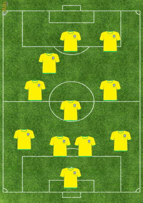
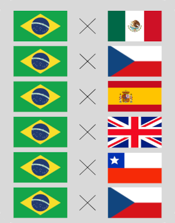

Gylmar
Zózimo
Mauro
Nilton
Djalma
Zito
Didi
Zagallo
Amarildo
Vavá
Garrincha

Detalhes do primeiro jogo: Brasil 2 x 0 México
Data: 30/05/1962
Local: Vina del Mar
Detalhes do segundo jogo: Brasil 0 x 0 Tchecoslováquia
Data: 02/06/1962
Local: Gotemburgo
Detalhes do terceiro jogo: Brasil 2 x 1 Espanha
Data: 06/06/1962
Local: Vina del Mar
Detalhes da quarta de final: Brasil 3 x 1 Inglaterra
Data: 10/06/1962
Local: Uddevalla
Detalhes da semi final: Brasil 4 x 2 Chile
Data: 13/06/1962
Local: Santiago
Detalhes da final: Brasil 3 x 1 Tchecoslováquia
Data: 17/06/1962
Local: Santiago